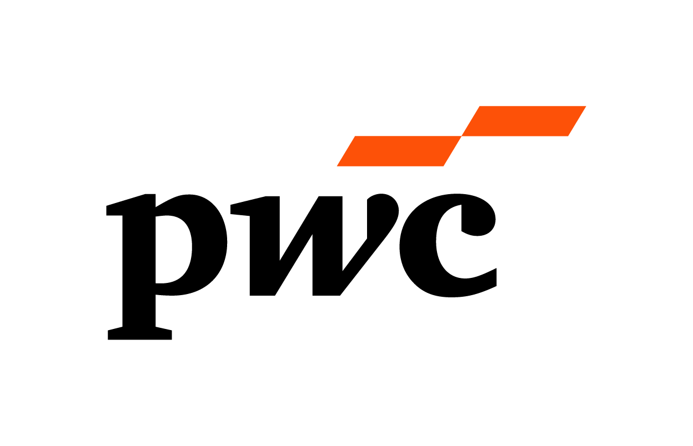

Jak zadbać o bezpieczeństwo
w niebezpiecznych czasach


w niebezpiecznych czasach
6. Edycja Konin Business Meeting

Izba Gospodarcza Wielkopolski Wschodniej wraz z Akademią Nauk Stosowanych w Koninie, w partnerstwie z Turecką Izbą Gospodarczą po raz kolejny organizują konferencję „Konin Business Meeting”. Jest to już szóste wydarzenie z tego cyklu.

W 2026 roku wątkiem przewodnim naszego wydarzenia chcemy uczynić bezpieczeństwo. Otaczający nas świat dawno przestał być stabilny. Turbulencje w gospodarce stały się normą. Pandemia COVID pokazała, że zdrowie nie jest nam dane raz na zawsze. Wojna w Ukrainie i incydenty prowokowane przez Rosję w Polsce dowodzą, że zagrożone może być nasze życie. Ataki cybernetyczne mogą godzić w stabilność funkcjonowania otaczającej nas infrastruktury. Zmiany pokoleniowe w przedsiębiorczych rodzinach także mogą nie sprzyjać stabilności firm.

Jak radzić sobie z turbulencjami? Jaką przyjąć strategię: koncentracji czy dywersyfikacji? Czy warto rozważyć prowadzenie biznesu poza Polską? Gdzie inwestować ewentualne nadwyżki? Jak zadbać o bezpieczeństwo fizyczne, cybernetyczne czy finansowe? Jak zabezpieczyć ciągłość naszego biznesu na okoliczność pogorszenia się naszego zdrowia lub nawet śmierci? To nie są tematy abstrakcyjne, one są jak najbardziej realne!
konferencji
1
Fakenews
2
Strategia
3
Bezpieczeństwo
w biznesie
4
Sukcesja

konferencji 23.04.2026
Data:
23.04.2026r.
Miejsce:
Akademia Nauk Stosowanych w Koninie Centrum Wykładowo-Dydaktycze, ulica ks. J. Popiełuszki 4
8:30
Rejestracja (poranna kawa i ciacho)
9:00
Otwarcie konferencji (Mateusz Kowalewski IGWW i Damian Brzóska TIG)
9:10
Wystąpienie Prezydenta Konina, Piotra Korytkowskiego
9:20
Wystąpienie Starosty Powiatu Konińskiego, Katarzyny Fryzy
9:30
Wystąpienie Rektora ANS, Artura Zimnego
9:40
Jak zapewnić fizyczne bezpieczeństwo na wypadek konfliktu? Paweł Figurski, Kierownik Wydziału Bezpieczeństwa i Zarządzania Kryzysowego w Urzędzie Miejskim w Koninie
10:05
Instrukcja obsługi business mixer-a
10:15
Przerwa kawowa + business mixer
10:45
Wystąpienie przedstawiciela Banku Millennium
11:15
Panel: Bezpieczeństwo w sieci
Zagadnienia:
1. Dezinformacja - jak nie dać się clickbait-om i innym fałszywym wiadomościom.
2. Sztuczna inteligencja (AI) - szanse i zagrożenia.
3. Bankowość elektroniczna - jak uczynić z naszego konta fortecę nie do zdobycia?
4. Czy moja firma jest odporna na atak? Jak się zabezpieczać, nie wydając majątku na firewall-e?
Uczestnicy: Przedstawiciel Partnera (Millennium Bank), Marcin Ludwiszewski (NOXVERI), Rafał Bajdek (ANS)
Moderacja: Tomasz Maciejewski (IGWW)
12:15
Zabezpiecz swój biznes na teraz i dla przyszłych pokoleń. Rozmowa z Jackiem Pawłowskim Partnerem PwC Legal Polska, radcą prawnym
Zagadnienia:
1. Czy majątkowe dziedzictwo dotyczy tylko najbogatszych?
2. Kiedy zacząć planować / budować dziedzictwo?
3. Oczywiste i nieoczywiste możliwości inwestowania (obecny biznes, nieruchomości, giełda, fundusze, private equity, metale, sztuka, inne?)
4. Czy lub jak rozmawiać z rodziną o majątku?
Rozmowę poprowadzi Mateusz Kowalewski (IGWW)
12:45
Business mixer
13:15
Lunch
13:45
Równoległe sesje warsztatowe
Sesja I
Cyberbezpieczeństwo przedsiębiorstw
Prowadzący: Marcin Ludwiszewski (NOXVERI)
Sesja II
DGA + WARP
Prowadzący: DGA
14:30
Przerwa
14:45
"Nie zgaduj! Analizuj. Decyduj. Komunikuj. Jak dane stają się tarczą biznesu."
Gość specjalny: Alicja Defratyka - ekonomistka, zwolenniczka edukacji ekonomicznej i obywatelskiej od najmłodszych lat. Pokazuje, jak wielką moc mają liczby i dane oraz jak za ich pomocą można objaśniać otaczającą nas rzeczywistość, komunikować ważne tematy czy odkłamywać fake newsy.
15:30
Loteria wizytówkowa
16:30
Zakończenie
Chcesz poznać koszt udziału w wydarzeniu? Kliknij poniższy przycisk!
Dla członków IGWW przygotowana została zniżka członkowska.

Organizatorzy
Partner główny
Partnerzy

Patronat medialny